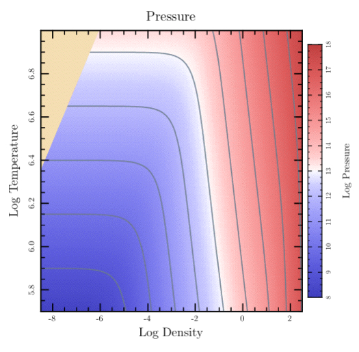
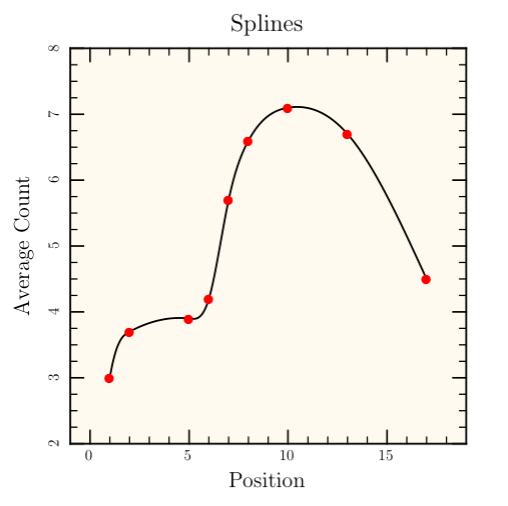
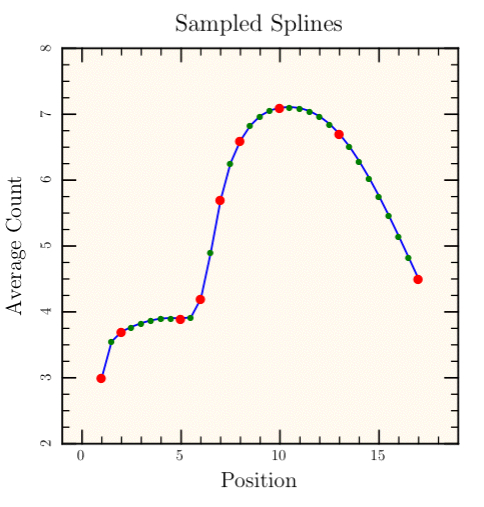
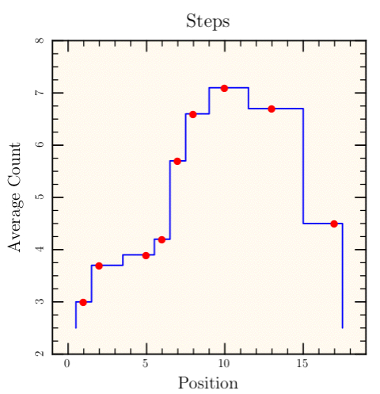
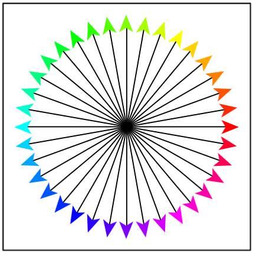

class Tioga::Special_Paths
These are the methods for creating and using various special paths including contours, splines, steps, arrows, and error bars.
Public Instance Methods
Appends a series of Bezier curves to the path based on the cubic spline interpolant interp. See make_interpolant.
# File lib/Tioga/Special_Paths.rb, line 208 def append_interpolant_to_path(interp) end
Creates a path following a contour in a two dimensional table of data using an algorithm from Gri done by Dan Kelley. (There is also an option to use the CONREC algorithm of Paul D. Bourke.) The results are returned in 2-element array with first element a vector of the x values for the contour and second element a vector of the y values. See show_contour.
Dictionary Entries
'zs' => a_dtable # The data table 'data' # Alias for 'zs' 'xs' => a_dvector # The x figure coordinates for the columns of data 'ys' => a_dvector # The y figure coordinates for the rows of data 'legit' => a_dtable # Optional table, same size as zs, non-zero means corresponding data is okay. 'dest_xs' => a_dvector # The contour x values will be placed in this vector (optional). 'dest_ys' => a_dvector # The contour y values will be placed in this vector (optional). 'gaps' => an_array # Indices for gaps will be placed in this Array. 'z_level' => a_float # The contour level 'z' # Alias for 'z_level' 'level' # Alias for 'z_level' 'method' => a_string # (Optional) set to 'conrec' to use that algorithm instead of the one from Gri.
Example
levels = [9,10,11,12,13,14,15,16,17] t.show_plot('boundaries' => bounds) do clip_press_image t.stroke_color = SlateGray t.line_width = 1 dict = { 'gaps' => gaps, 'xs' => @eos_logRHOs, 'ys' => @eos_logTs, 'data' => @pres_data } levels.each do |level| dict['level'] = level pts_array = t.make_contour(dict) t.append_points_with_gaps_to_path(pts_array[0], pts_array[1], gaps, true) t.stroke end end

# File lib/Tioga/Special_Paths.rb, line 50 def make_contour(dict) end
A cubic spline interpolant is created using 'start_slope', 'end_slope', 'xs', and 'ys'. The result can passed to #append_interpolant_to_path or Dvector.spline_interpolate.
If 'start_slope' is given, it is used as the initial slope of the curve. Otherwise, the starting slope is determined by the best fit with the starting second derivative set to 0 (known as a “free” or “natural” spline). The 'end_slope' is treated similarly.
Dictionary Entries
'start_slope' => a_float # optional 'end_slope' => a_float # optional 'xs' => a_dvector # The data x in figure coordinates 'ys' => a_dvector # The data y in figure coordinates
Example
def splines # append bezier curves t.do_box_labels("Splines", "Position", "Average Count") xs = Dvector[ 1.0, 2.0, 5.0, 6.0, 7.0, 8.0, 10.0, 13.0, 17.0 ] ys = Dvector[ 3.0, 3.7, 3.9, 4.2, 5.7, 6.6, 7.1, 6.7, 4.5 ] t.show_plot('boundaries' => [-1, 19, 8, 2]) do t.fill_color = FloralWhite t.fill_frame start_slope = 2.5*(ys[1]-ys[0])/(xs[1]-xs[0]) interp = t.make_interpolant('xs' => xs, 'ys' => ys, 'start_slope' => start_slope) t.append_interpolant_to_path(interp) t.stroke_color = Black t.stroke t.show_marker('Xs' => xs, 'Ys' => ys, 'marker' => Bullet, 'scale' => 0.6, 'color' => Red); end end

# File lib/Tioga/Special_Paths.rb, line 203 def make_interpolant(dict) end
Creates an interpolated series of points smoothly connecting the given data points.
See also #append_interpolant_to_path for creating smooth paths based on Bezier curves rather than on sampled points joined by straight line segments. Returns a vector of the y values corresponding to the requested 'sample_ys'.
Dictionary Entries
'start_slope' => a_float # optional 'end_slope' => a_float # optional 'xs' => a_dvector # The data x in figure coordinates 'ys' => a_dvector # The data y in figure coordinates 'sample_xs' => a_dvector # The x values where will interpolate 'result_ys' => a_dvector # The y values will be placed here (optional).
A cubic spline interpolant is created (see #make_interpolant) using 'start_slope', 'end_slope', 'xs', and 'ys'. At each x location in 'sample_xs', the interpolant is used to find the corresponding y location which is then returned as the value (and optionally also placed in the 'result_ys' vector).
The results can passed to routines such as append_points_to_path or show_polyline.
Example
def sampled_splines t.do_box_labels("Sampled Splines", "Position", "Average Count") xs = Dvector[ 1.0, 2.0, 5.0, 6.0, 7.0, 8.0, 10.0, 13.0, 17.0 ] ys = Dvector[ 3.0, 3.7, 3.9, 4.2, 5.7, 6.6, 7.1, 6.7, 4.5 ] data_pts = xs.size x_first = 0.0; x_last = 18.0; y_first = y_last = 2.5 x_results = Dvector[] y_results = Dvector[] t.make_steps( 'dest_xs' => x_results, 'dest_ys' => y_results, 'xs' => xs, 'ys' => ys, 'x_first' => x_first, 'y_first' => y_first, 'x_last' => x_last, 'y_last' => y_last) t.show_plot('boundaries' => [-1, 19, 8, 2]) do t.fill_color = FloralWhite t.fill_frame smooth_pts = 4*(data_pts-1) + 1 dx = (xs[data_pts-1] - xs[0])/(smooth_pts-1) sample_xs = Dvector.new(smooth_pts) { |i| i*dx + xs[0] } result_ys = t.make_spline_interpolated_points( 'sample_xs' => sample_xs, 'xs' => xs, 'ys' => ys, 'start_slope' => 2.5*(ys[1]-ys[0])/(xs[1]-xs[0])) t.stroke_color = Blue t.append_points_to_path(sample_xs, result_ys) t.stroke t.show_marker('Xs' => sample_xs, 'Ys' => result_ys, 'marker' => Bullet, 'scale' => 0.4, 'color' => Green); t.show_marker('Xs' => xs, 'Ys' => ys, 'marker' => Bullet, 'scale' => 0.6, 'color' => Red); end end

# File lib/Tioga/Special_Paths.rb, line 163 def make_spline_interpolated_points(dict) end
Creates a 'staircase' path with steps matching the given data points; returns 2-element array with first element a vector of the x values for the steps and second element a vector of the y values.
Dictionary Entries
'xfirst' => a_float # x location for the start of the steps 'x_first' # Alias for 'xfirst' 'yfirst' => a_float # y location for the start of the steps 'y_first' # Alias for 'yfirst' 'xlast' => a_float # x location for the end of the steps 'x_last' # Alias for 'xlast' 'ylast' => a_float # y location for the end of the steps 'y_last' # Alias for 'ylast' 'xs' => a_dvector # The data x in figure coordinates 'ys' => a_dvector # The data y in figure coordinates 'dest_xs' => a_dvector # The x values for the steps will go here (optional). 'dest_ys' => a_dvector # The y values for the steps will go here (optional).
The widths of steps are determined by 'xfirst', 'xs', and 'xlast'; the heights of steps are determined by 'yfirst', 'ys', and 'ylast'. The steps up and down occur at the midpoints between the given x locations. If 'dest_xs' are given in the dictionary, that vector will be set to the x values for the steps. Similarly for 'dest_ys'.
Example
def steps t.do_box_labels("Steps", "Position", "Average Count") xs = Dvector[ 1.0, 2.0, 5.0, 6.0, 7.0, 8.0, 10.0, 13.0, 17.0 ] ys = Dvector[ 3.0, 3.7, 3.9, 4.2, 5.7, 6.6, 7.1, 6.7, 4.5 ] data_pts = xs.size x_first = 0.0; x_last = 18.0; y_first = y_last = 2.5 x_results = Dvector[] y_results = Dvector[] stps = t.make_steps( 'xs' => xs, 'ys' => ys, 'x_first' => x_first, 'y_first' => y_first, 'x_last' => x_last, 'y_last' => y_last) t.show_plot('boundaries' => [-1, 19, 8, 2]) do t.fill_color = FloralWhite t.fill_frame t.stroke_color = Blue t.append_points_to_path(stps[0], stps[1]) t.stroke t.show_marker('Xs' => xs, 'Ys' => ys, 'marker' => Bullet, 'scale' => 0.6, 'color' => Red); end end

# File lib/Tioga/Special_Paths.rb, line 104 def make_steps(dict) end
Draws an arrow connecting the given head and tail points and optionally adds head and tail markers rotated to match the slope of the line.
Dictionary Entries
'x_head' => a_float # x coordinate of the head of the arrow 'y_head' => a_float # y coordinate of the head of the arrow 'head' => [ x_head, y_head ] # coordinates of the head of the arrow 'x_tail' => a_float # x coordinate of the tail of the arrow 'y_tail' => a_float # y coordinate of the tail of the arrow 'tail' => [ x_tail, y_tail ] # coordinates of the tail of the arrow 'line_width' => a_float # for the line joining head to tail 'head_marker' => a_marker # default is Arrowhead (use 'None' to omit) 'tail_marker' => a_marker # default is BarThin (use 'None' to omit) 'head_scale' => a_float # scale for head_marker 'tail_scale' => a_float # scale for tail_marker 'color' => a_color # default for the following colors 'head_color' => a_color # color for show_marker with head_marker 'tail_color' => a_color # color for show_marker with tail_marker 'line_color' => a_color # color for line from head to tail
Example: 't' in this is the default FigureMaker.
def show_arrows t.stroke_rect(0,0,1,1) center_x = 0.5; center_y = 0.5; len = 0.45 hls = t.rgb_to_hls(Red) angles = 36 delta = 360.0/angles angles.times do |angle| angle *= delta dx = len*cos(angle*RADIANS_PER_DEGREE) dy = len*sin(angle*RADIANS_PER_DEGREE) x = center_x + dx; y = center_y + dy clr = t.hls_to_rgb([angle, hls[1], hls[2]]) t.show_arrow( 'head' => [x,y], 'tail'=> [center_x, center_y], 'head_scale' => 1.5, 'tail_marker' => 'None', 'head_color' => clr) end end

# File lib/Tioga/Special_Paths.rb, line 302 def show_arrow(dict) end
Calls #show_polyline with
the close_subpaths argument set to false. See make_contour.
Note: If you zoom in on a contour line, you'll discover that it is made up of lots of very short, disconnected line segments. This may be a bug in the implementation, or it may be inherent in the algorithm. I don't know which. It only becomes a problem if you try to use dashes or dots to stroke the contour line. The sequence of dashes and dots restarts at each section of the stroked line, so. for contours, it is constantly restarting and never getting very far. The result is definitely NOT what you'd expect.
Rather than using dots and dashes for contours, you might consider using different colors and line widths. For example, you might make every N'th contour line thicker and darker to emphasize it.
# File lib/Tioga/Special_Paths.rb, line 231 def show_contour(xs, ys, gaps = nil, color = nil, type = nil, legend = nil) end
Draws error bars at the given point. The horizontal extent is given by 'dx' or by 'dx_plus' and 'dx_minus' in case they are different. Similarly, the vertical extent is either 'dy' or 'dy_plus' and 'dy_minus'. The 'end_cap' parameter specifies the length of end caps on the error bars in units of the text height.
Dictionary Entries
'x' => a_float # x coordinate of the point 'y' => a_float # x coordinate of the point 'dx' => a_float # horizontal error bar from x - dx to x + dx 'dy' => a_float # vertical error bar from y - dy to y + dy 'dx_plus' => a_float # horizontal error bar from x to x + dx_plus 'dx_minus' => a_float # horizontal error bar from x - dx_minus to x 'dy_plus' => a_float # vertical error bar from y to y + dy_plus 'dy_minus' => a_float # vertical error bar from y - dy_minus to y 'color' => a_color # default is Black. 'end_cap' => a_float # length in text heights (default is 0.15) 'line_width' => a_float # default is 1
# File lib/Tioga/Special_Paths.rb, line 253 def show_error_bars(dict) end
Calls context, then, inside the new context, changes line_type and
stroke_color (if those arguments are not nil), calls
append_points_with_gaps_to_path, calls stroke, and then saves the legend
information (if legend is not nil).
# File lib/Tioga/Special_Paths.rb, line 214 def show_polyline(xs, ys, color = nil, legend = nil, type = nil, gaps = nil, close_subpaths = nil) end